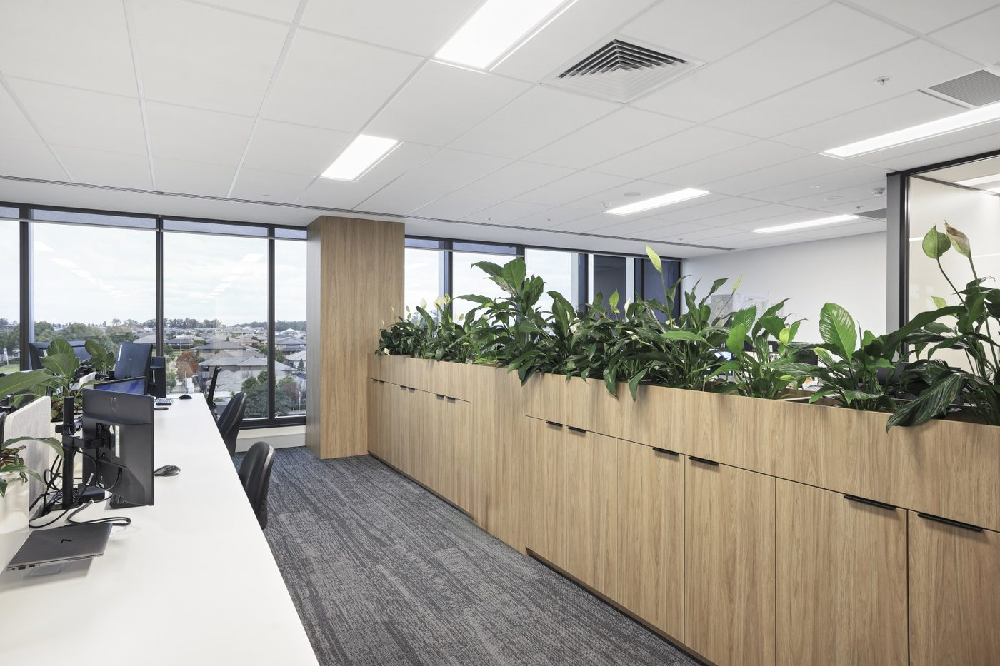

About this Hub
A central place for the tools, standards and know-how of the Beveridge Williams Western Sydney office — built by the people who use them.
Where it started
The first version of this toolset was written by Adrian Shaw in the drafting team, long before automating drafting work was widely considered part of the job. He automated the repetitive steps he kept running into — on his own, largely self-taught, with none of the tooling that makes this straightforward today.
It began as a handful of routines that each saved a few minutes, and grew as more were added. Over time it became a large part of how efficiently the office drafted and how quickly survey plans could be turned around.
It wasn't a popular idea at the time. There was little appetite for it and no shortage of doubt, and for a long stretch the work had no audience beyond his own desk. He kept at it regardless — he could see what it would be worth once it was finished, and he was willing to be the only one who did. He was ahead of his time, and everything here rests on what he started.
Others across Western Sydney added to it over the years — drafters, surveyors and engineers who solved their own problem and shared the result. But those tools lived wherever they happened to be written: a routine on one person's desktop, a script passed around by email, a template on a network drive. They worked, and you only found them if someone showed you.
This Hub is the result of collecting them. The routines were gathered, rewritten where needed, and packaged into a single BricsCAD suite with one installer — Adrian's original ported across command by command onto a modern platform, with the work that replaced it still crediting it throughout. The documentation was written alongside, directly against the shipping tools, so the pages describe how they actually behave.
Collecting that work, building the installer and maintaining this site is the ongoing job of the Western Sydney Drafting department.

What's in it
The suite spans the disciplines that share the floor:
- Drafting — the WSY Drafting ribbon: cadastre, sheeting, annotation, boundary dimensioning and curve tables.
- Survey — the WAE ribbon for Works-As-Executed plans.
- Engineering — the BW Engineering ribbon: standard text heights, leaders, dimensions, scales and plotting.
- Office tools — the NSW Lot Loader and the Point Cloud Digitizer, which pull outside data into a drawing.
- Quality — the drawing checklist panel.
- Community LISP — well-regarded public routines the office has long relied on, bundled so they load with everything else instead of being installed by hand.
If you're from another office
You're welcome here. Nothing here is limited to Western Sydney, and the installer is open to anyone at Beveridge Williams — take the whole suite or tick only the components you want, since each one works on its own.
Be aware of what you're picking up, though. These tools were shaped by the work this office does: NSW cadastre, deposited and detail plans, Works-As-Executed surveys. The standards pages describe how Western Sydney draws, not a firm-wide mandate. Some of it will transfer unchanged, some will need adapting, and some won't suit you at all — that's expected.
Contributing and feedback
The suite is still moving. If a command misbehaves, a page is wrong or out of date, or you have a routine of your own worth folding in, say so — that's how everything here got here in the first place.
Head to Support & Requests and use the form there — a bug report, an idea, a tool you've built, or a question are all equally welcome, and it goes straight to the team.